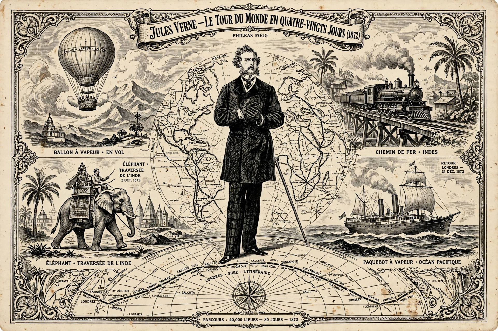

Around the World in Eighty Days (French: Le Tour du monde en quatre-vingts jours) is an adventure novel by French writer Jules Verne, first published in French in 1872 (in book form 1873). It is one of the Voyages extraordinaires.

| Around the World in Eighty Days | |
|---|---|
| Author | Jules Verne |
| Published | 1872 (serial); 1873 (book) |
| Language | French |
Wealthy, precise London gentleman Phileas Fogg wagers £20,000 at the Reform Club that he can circumnavigate the world in 80 days using new rail and steamship links. With his valet Passepartout he travels via Suez, India — where they rescue the widow Aouda from a suttee — Hong Kong, Japan, across America by rail, and back across the Atlantic. Detective Fix, believing Fogg a bank robber, pursues and delays them. Fogg appears to lose by minutes, but discovers he gained a day crossing the International Date Line eastward, and wins the bet, marrying Aouda.
The novel inspired real circumnavigation attempts, notably Nellie Bly's 72-day journey in 1889–90, and many adaptations, including the 1956 film that won the Academy Award for Best Picture and the 2004 film with Jackie Chan.